QUIZ
You're gonna see somebody
Write down who it is
Write down how old they are
ready?
1
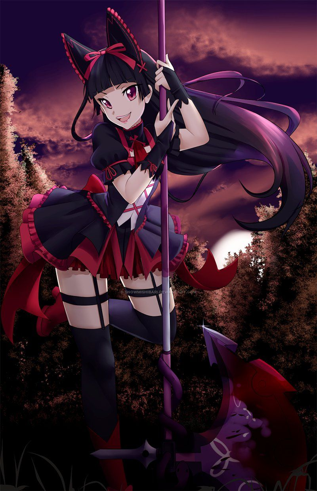2

3

4
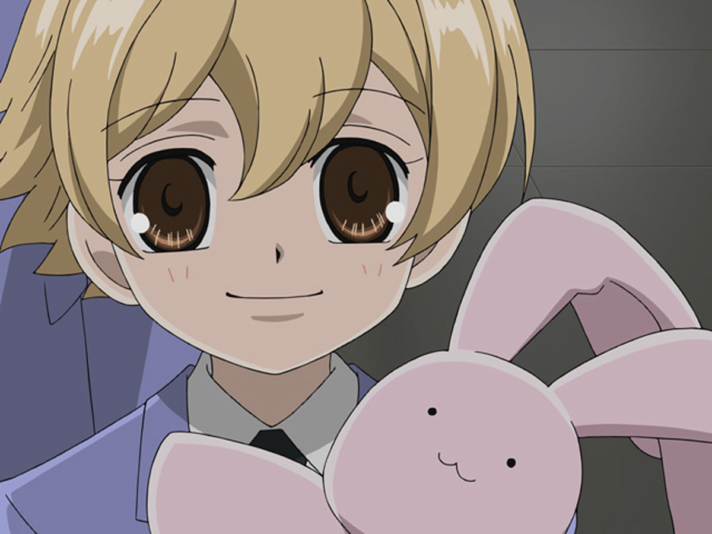5
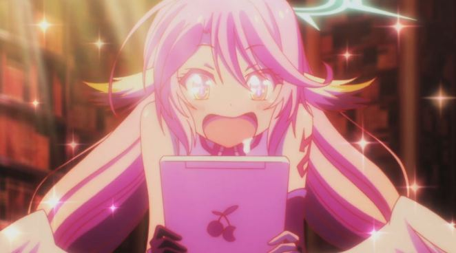6
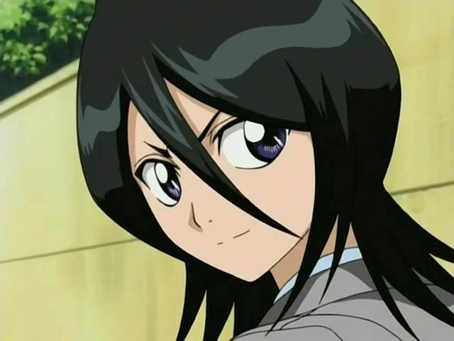7
8
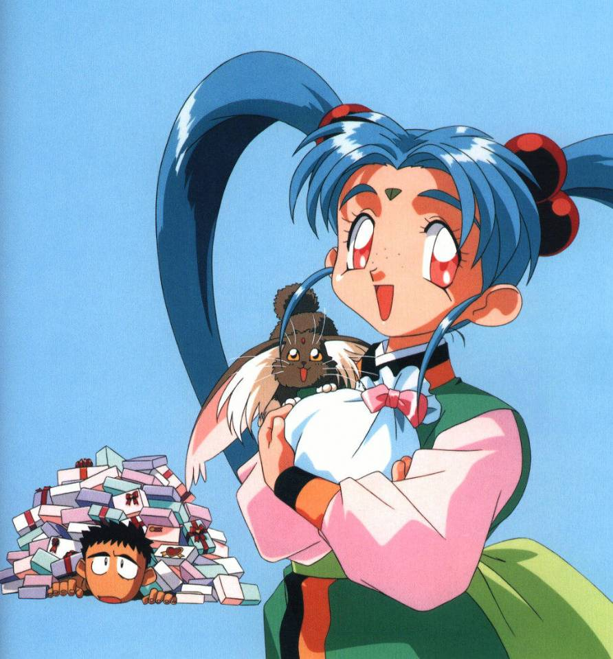9
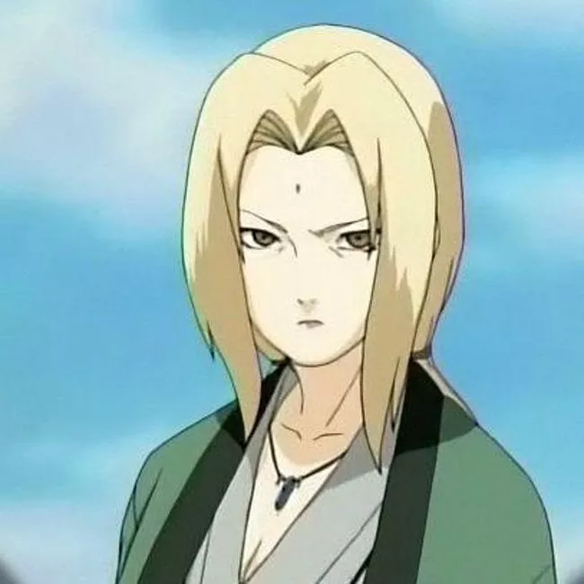10
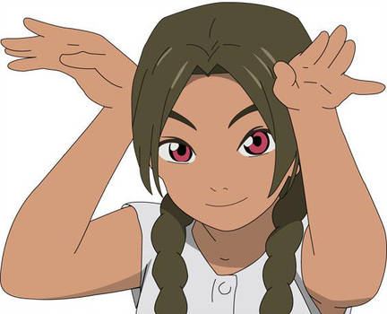1
1
Rory Mercury - 'Gate'
Age 961
2
2
Kinue Hayase -'Masamune-kun's Revenge'
Age 42
3
3
Eisaku Noguchi -'March Comes In Like A Lion'
Age 15
4
4
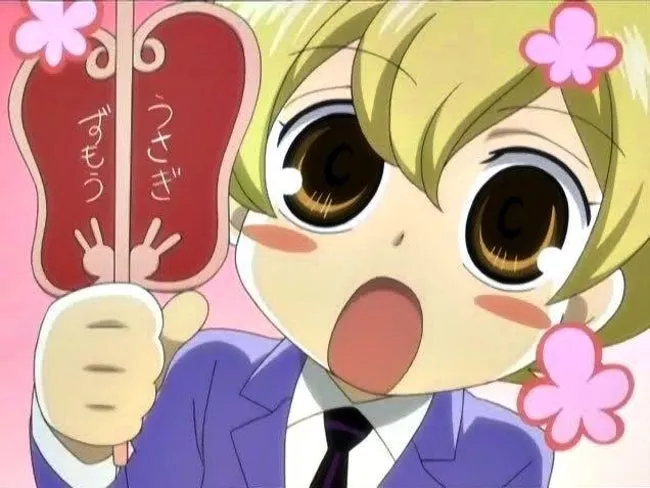4
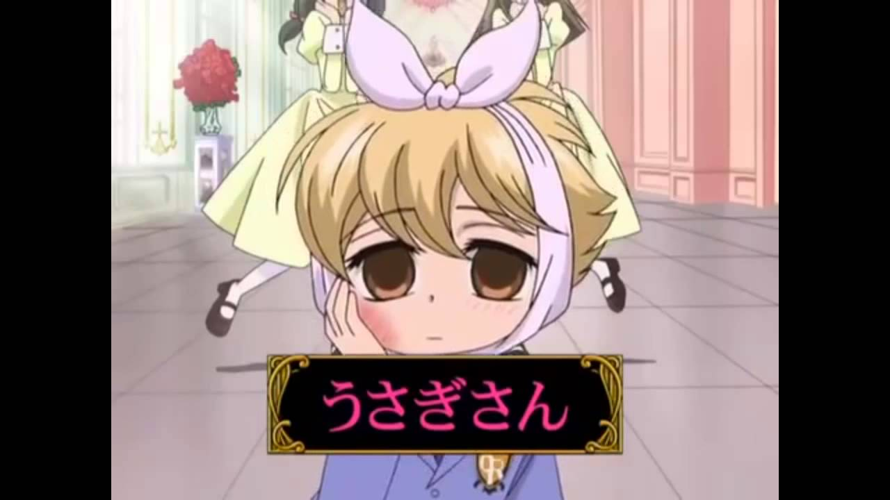4
Honey Ouran - 'High school host club'
Age 18
5
5
Jibril -'No Game No Life'
Age 6407
6
6
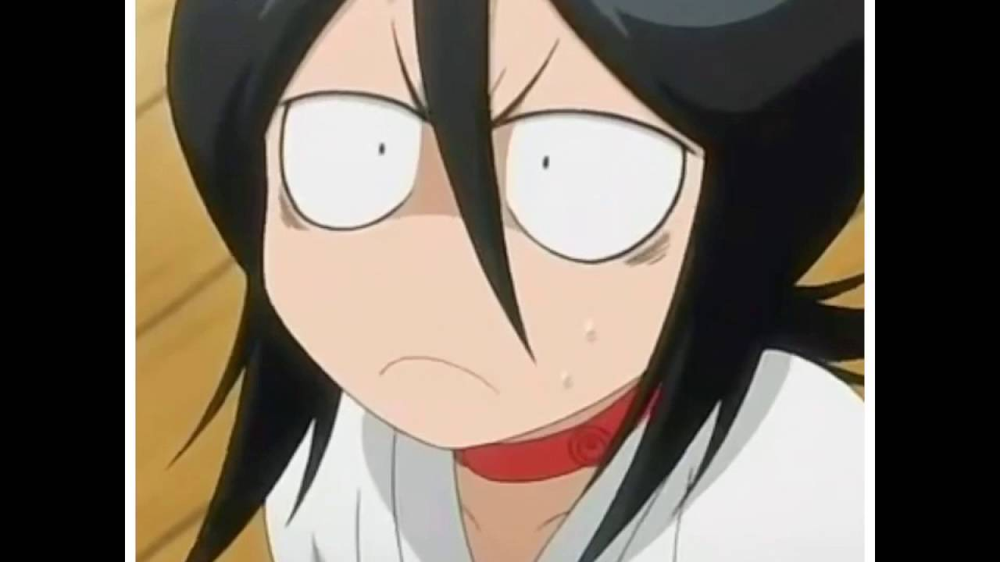6
Rukia Kuchiki -'Bleach'
Age 150
7
7
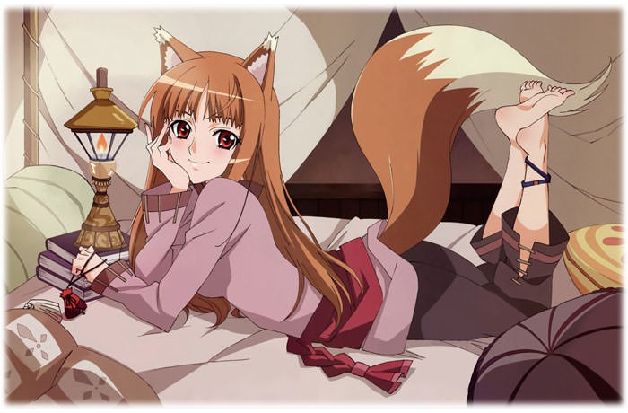7
Holo -'Spice and Wolf'
Age 600
8
8
Sasami -'Tenchi Muyo'
Age 708
9
9
Tsunade -'Naruto'
Age 51
10
10
Arumi Asahina -'Abenobashi'
Age 12
There's going to be a list of 10 shows
There's going to be 10 pairs of quotes
See a pair of quotes
Write down which show they're from
...
| Acchi Kocchi | K-ON! |
| Eden of the East | Legend of the Galactic Heroes |
| Fairy Tale | Nichijou |
| Gintama | One Piece |
| Hayate the Combat Butler | Daily Lives of High School Boys |
Question 1
“I’ve always wanted someone to ask me ‘Would you like fries with that?’”
“Oh my god! He’s deflowering my guitar!”
Question 2
“He’s cleaning our floors. That fiend!”
“Shoot her to death, without killing her!”
Question 3
“I wonder if nipples grow back.”
“Panties are the symbol of happiness.”
Question 4
“Look, my hand’s a hook. I can only be a pirate or a coat hanger now.”
“Anime staff! You think you can get away with such laziness?!”
Question 5
“The Earth must be becoming tsundere.”
“Fine, I’ll step aside for today, but I’ll bring a stronger hamster next time!”
Question 6
“There there. Your stomach sounds pretty cute, so don’t be embarrassed by it.”
“Stop! Santa’s HP is already 0.”
Question 7
“We’re all dragon slayers and yet, why am I the only one without a cat?”
“Wow, that’s the first time a house ever waved at me.”
Question 8
“I want to be an onion.”
“Arriving by goat doesn’t violate school policy!”
Question 9
“I remember having amnesia.”
“It’s soaked up various manly fluids, including but not limited to sweat and tears.”
Question 10
“The right to violate the rights of the people belongs to the people.”
“Alcohol is humanity’s friend.”


K-ON!


One Piece


Daily Lives of High School Boys


Gintama


Hayate the Combat Butler


Acchi Kocchi


Fairy Tail


Nichijou


Eden of the East


Legend of the Galactic Heroes
You're gonna see a thing
Write down what it is
Write down which show its from
e.g. "Vegeta's scouter from Dragon Ball Z"
...
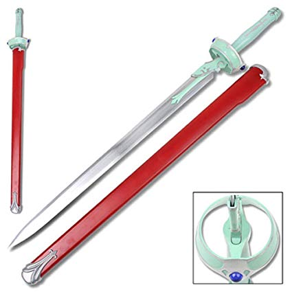
1

2

3
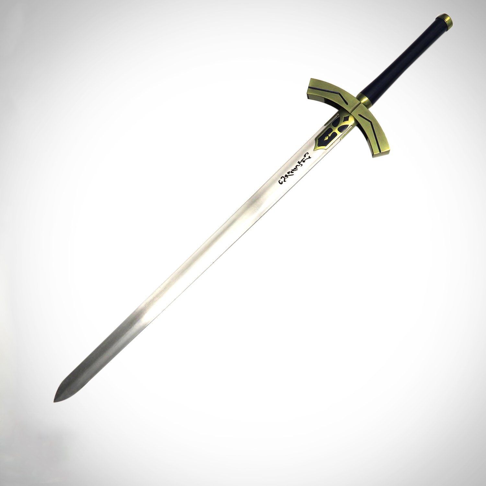
4

5
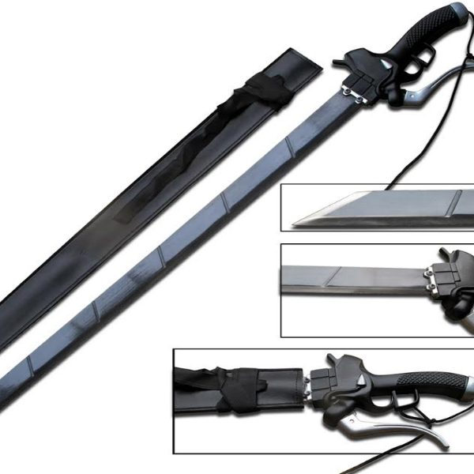
6
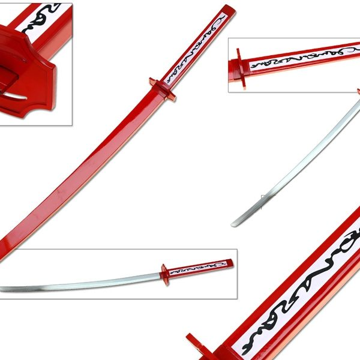
7
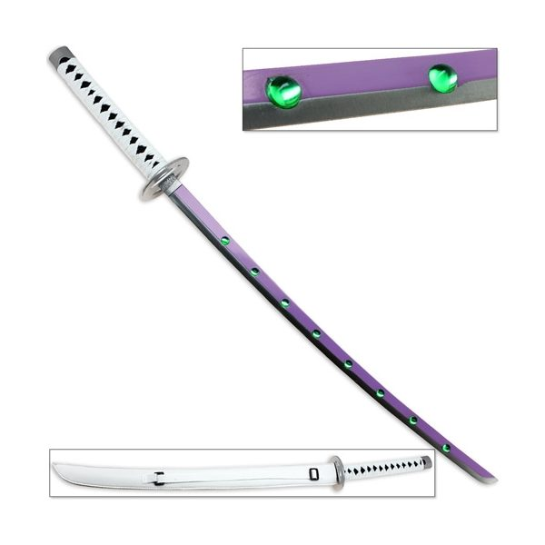
8
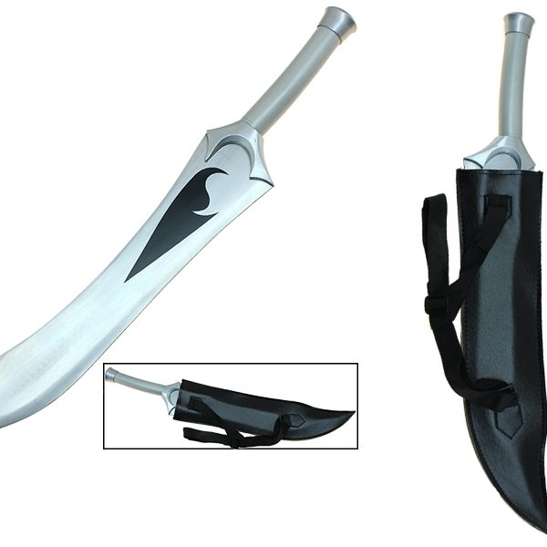
9

10
1. Asuna's Lambent Light Sword from SAO
2. Ukitake Juushirou's Zanpakuto from Bleach
3. Gate Keys of Celestial Spirits from Fairy Tail
4. Excalibur from Fate
5. Reverse Blade Sword from Rurouni Kenshin
6. 3D Maneuver Gear Sword from Attack on Titan
7. Akame's Murasame Teigu's from Akame Ga Kill
8. Shura Kirigakure's sword from Blue Exorcist
9. Shirou Emiya's sword from Fate Stay Night
10. Sasuke Uchiha's sword from Naruto
You'll see a summary
Then write down what show its a summary of
...

You're gonna see a mashup of anime and non-anime shows
Write down the 2 shows this is a mashup of
ready?
1

2

3

4

5

6
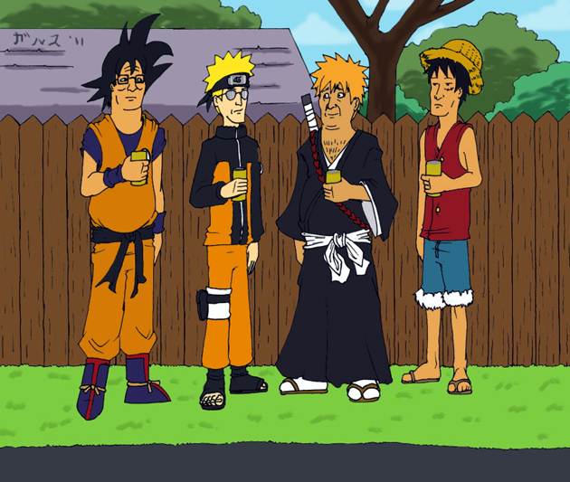7

8

9

10

1
1
Dragon Ball Z
Winnie The Pooh
2
2
Full Metal Alchemist
Frozen
3
3
Attack on Titan
Fantasia
4
4
Sailor Moon
Disney Princesses Dream Time
5
5
Gurren Lagann
Toy Story
6
6
Naruto
King of the Hill
7
7
My Neighbour Totoro
Big Hero 6
8
8
Kill la Kill
Frozen
9
10
Fist of the North Star
Chip 'N Dale
10
10
JoJo's Bizzare Adventure
Alice in Wonderland
Move on